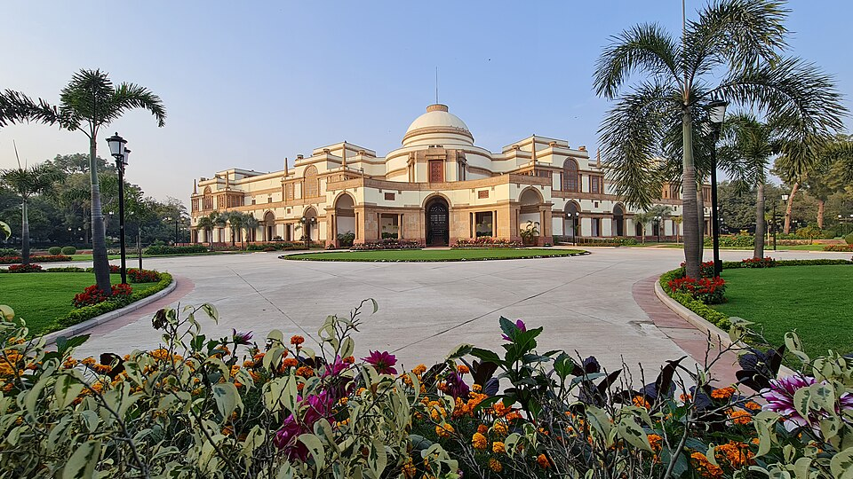

नेपाल के पीएम बालेन शाह की दिल्ली यात्रा से मजबूत हुए भारत-नेपाल संबंध
नेपाल के प्रधानमंत्री बालेन शाह की नई दिल्ली यात्रा के दौरान दोनों देशों ने द्विपक्षीय संबंधों को मजबूत करने पर जोर दिया। भारत ने नेपाल के लिए 15,000 करोड़ रुपये के विकास सहायता पैकेज की घोषणा की है।

नेपाल के प्रधानमंत्री बालेन शाह अपनी पहली द्विपक्षीय विदेश यात्रा के तहत 22 नवंबर को नई दिल्ली पहुंचे। यात्रा के अंत में भारत और नेपाल ने कनेक्टिविटी, व्यापार और विकास सहायता जैसे मुद्दों पर संयुक्त बयान जारी किया। दोनों पक्षों ने सैटेलाइट संचार और अपराध नियंत्रण समेत आठ सहमति पत्रों पर हस्ताक्षर किए।
प्रधानमंत्री नरेंद्र मोदी ने हैदराबाद हाउस में बातचीत के दौरान शाह की सराहना की। भारत के विदेश सचिव विक्रम मिस्री के अनुसार, दोनों नेताओं ने प्रतिनिधिमंडल स्तर की बैठक के अलावा विभिन्न द्विपक्षीय मुद्दों पर लंबी चर्चा की। भारत ने नेपाल के लिए 15,000 करोड़ रुपये के अब तक के सबसे बड़े सहायता पैकेज का ऐलान किया है, जिसमें पुनर्निर्माण और ऊर्जा परियोजनाएं शामिल हैं।
विशेषज्ञों का मानना है कि यह यात्रा दोनों देशों के बीच पिछले एक दशक से चले आ रहे राजनीतिक मतभेदों और कड़वाहट को पीछे छोड़कर भविष्य की ओर बढ़ने का संकेत है। नेपाली प्रधानमंत्री ने पीएम मोदी को नेपाल आने का निमंत्रण भी दिया है।
और पढ़ें
 अंतरराष्ट्रीय
अंतरराष्ट्रीयइजरायली संसद में प्रधानमंत्री कार्यकाल की सीमा तय करने का विधेयक पारित
इजरायल की संसद में एक नया विधेयक पारित हुआ है, जिसमें प्रधानमंत्री के कार्यकाल की सीमा तय करने का प्रस्ताव है। कार्यवाहक पीएम बेंजामिन नेतन्याहू ने इसकी कड़ी आलोचना की है।
अंतरराष्ट्रीयगणितज्ञ आनंद कुमार को जापान में मिला प्रतिष्ठित ‘स्पेशल अचीवमेंट अवॉर्ड’
सुपर 30 के संस्थापक और गणितज्ञ आनंद कुमार को शिक्षा के क्षेत्र में उनके योगदान के लिए जापान में ‘स्पेशल अचीवमेंट अवॉर्ड’ से सम्मानित किया गया।
 अंतरराष्ट्रीय
अंतरराष्ट्रीयअमेरिकी सेना ने आयोवा संयंत्र में लगभग 5 टन विस्फोटक को नियंत्रित विस्फोट से नष्ट किया
अमेरिकी सेना ने सुरक्षा चिंताओं के चलते आयोवा के एक गोला-बारूद संयंत्र में लगभग 5 टन अस्थिर लेड एजाइड को नियंत्रित विस्फोट के जरिए नष्ट कर दिया है।
अंतरराष्ट्रीयदुनियाभर के बड़े शहरों में गहराया घरों का संकट, किराए पर मकान मिलना हुआ मुश्किल
संयुक्त राष्ट्र की रिपोर्ट के अनुसार, दुनिया के बड़े शहरों में मकानों की कीमतें और किराए तेजी से बढ़ रहे हैं। लागोस जैसे शहरों में युवाओं के लिए किफायती आवास ढूंढना बेहद कठिन हो गया है।